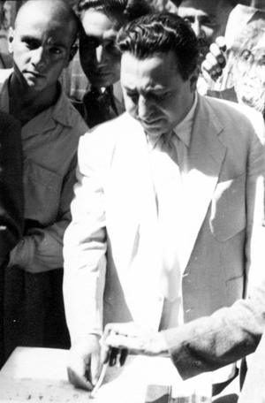

US-British Coup of 1953
|
In the Summer of 1953, US and Britain decided that the government of
Dr. Mossadiq should be overthrone. In anticipation, Mossadiq resorted
to a referendum to terminate the parliament which was controlled by a
majority of anti-Mossadiq members. Asghar Parsa is seen casting his
vote in the city of Rezaieh (now Urmiah) just days befor the US-British
Coup.
He was arrested in Khoy and transfered to Tehran. |
 |